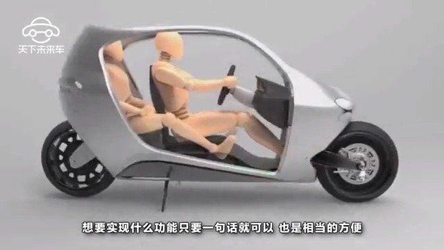

看看30年前漫画家的想象。 评论配图@科技工程与生活:【史上最安全摩托车！】 撞不倒的最安全摩托车 苹果公司都想收购的公司，Lit Motors利用5000~12000转/s的陀螺仪保持车身平衡。采用特斯拉电池，满电可行驶320公里，最高时速160km/h，还有智能语音控制功能。就想问啥时候卖，我要做风一样的男子 #科技# #摩托车# #道路交通安全# 科技工程与生活的秒拍视频 7万次播放 01:40

 评论配图
评论配图
 #科技# #摩托车# #道路交通安全#
#科技# #摩托车# #道路交通安全#  科技工程与生活的秒拍视频
科技工程与生活的秒拍视频